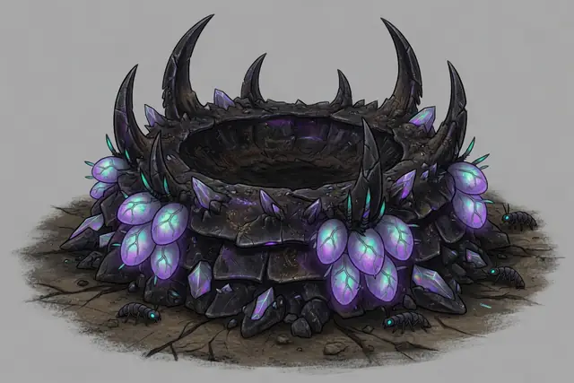
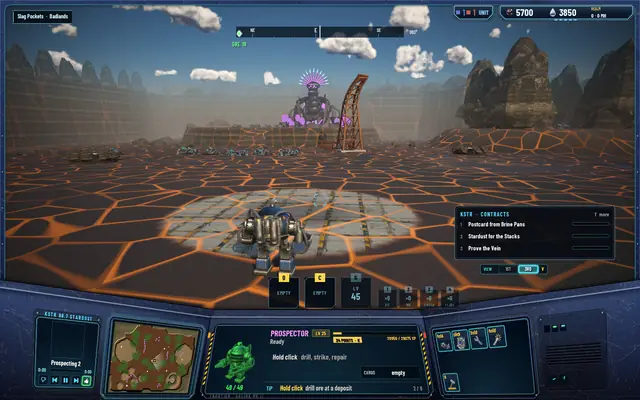
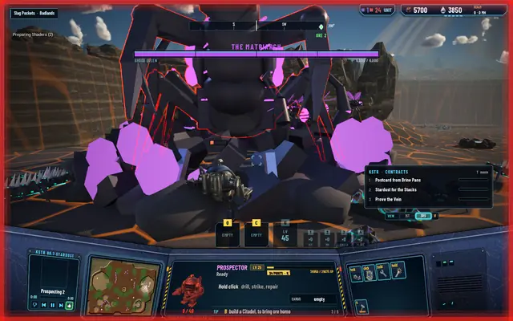
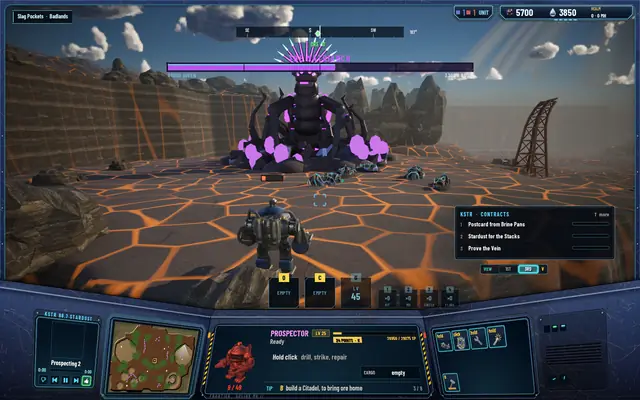
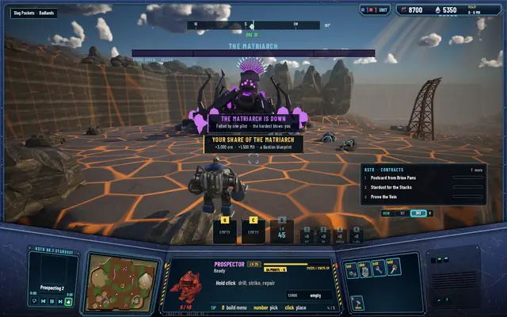

The Matriarch wakes in Slag Pockets
The Brood has a queen now. She lives at her nest in Slag Pockets, two regions from the start, with her horde around her, and she's the first thing in the world a pilot can't beat alone.

Her nest
The nest sits on the east plateau of Slag Pockets, 50 cells from the region's pad. It's a ring mound of chitin plates, dark rock and opal ore, 12 cells across, with egg pods on its flanks and seven spines around the rim. She stands in its bowl. She's 9.5 cells tall and her crown of spines glows violet, so you can see her over the rim from 55 cells away across the slag.
Her horde keeps the nest: four packs of Shardlings, 16 to 24 in all, and 4 to 8 Gloamwings over her. A new one hatches every 20 seconds while the nest is short. A pack goes for any pilot who steps into its patch and chases it anywhere inside the nest's 30-cell ring.
From the painting to the plateau

The nest's concept: a mound of chitin, spines on the rim, egg pods on the flanks.
From the pad in Slag Pockets: her crown over the nest, her packs in between.
How she fights
- 6,000hp, with armour 3: the Prospector's torch does 2 a strike
- 40 / 60her slam to units and to buildings, every 4 s
- 12 cellsher acid spit's range, at the ground or the air
- ×1.3her horde's speed for 10 s after a roar
She slams: both forelimbs rise for 0.8 seconds and crash down on everything on the ground within 3 cells in front of her. She spits acid every 3 seconds, 18 to a unit or 30 to a building, and it leaves a burning puddle 2 cells wide for 4 seconds. She roars once when a pilot first comes within 25 cells, then every 30 seconds while she fights. The roar sends every bug of her nest within 40 cells after her target at a third more speed, hatches four more Shardlings from her pods, is heard across the whole region and faintly in the next, and shakes the view of anyone close. She never goes more than 6 cells from the nest's centre, and after 20 seconds without a hit she mends 20 hp a second.
Near her, or once she's hurt, a boss bar shows at the top of the screen with her 6,000 hp.
A pilot alone can't take her down with the torch: 2 damage a strike against 6,000 hp, while she mends. What brings her down is turrets the realm builds at the nest, the gatling guns and Sentinels, and several pilots at once.
The fight
 The roar: she rears for 2 seconds and the nest turns on you.
The roar: she rears for 2 seconds and the nest turns on you.
Under the slam. The red edge is the Prospector taking the hit.
The boss bar at half.
Down, felled by one pilot in this staged shot: the whole share, 3,000 ore, 1,500 MH and a Bastion blueprint.


Her fall, and her return
When she falls, every pilot in the world hears "THE MATRIARCH IS DOWN". Every pilot who hurt her, with its Prospector or with a turret it built, gets a share of 3,000 ore and 1,500 MH by the damage it did (5% at least), and one rare blueprint copy, one of the three with the highest level floors. XP goes the same way, by each hit's share of her 6,000 hp. Her horde scatters with every other bug in the region, and no new group comes for a world day.
She doesn't stay down. Three world days after her fall, two hours on the world's clock, every pilot hears "THE MATRIARCH STIRS" and the nest starts to grow back from empty, one hatchling every 20 seconds. That's saved with the world, so it holds across restarts.
The Citadel's mission board knows about her too: one perilous hunt in three is "The Matriarch", and its marker is her nest.
What isn't right yet
Her egg pods still read as flat pink shapes in the pictures, nothing like the glowing pods in the painting. An art pass on her and the rest of the Brood is queued. It has landed since.
Every test suite passes: 488 core, 233 server and 84 network.
Coming
The canyon. When pilots lose a wave there, she's the one who comes: she walks out of her nest with an escort, fells every Sentinel and gatling gun in the zone, and the canyon starts over from wave one. The server can already send her; the waves that call her are next.